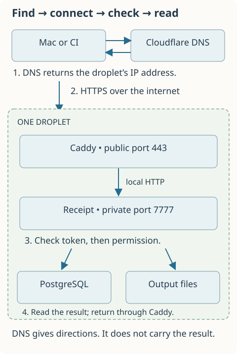
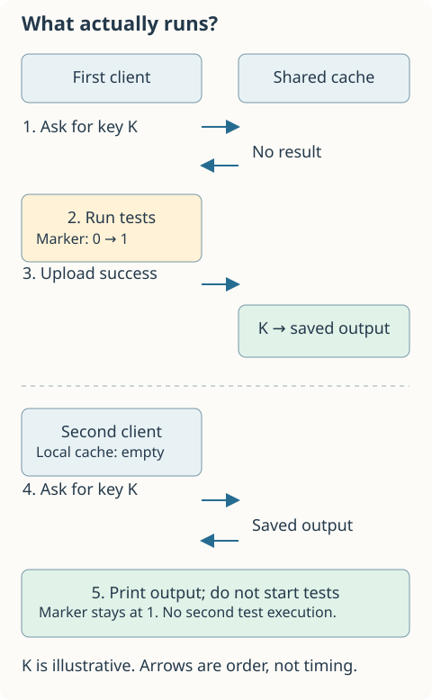
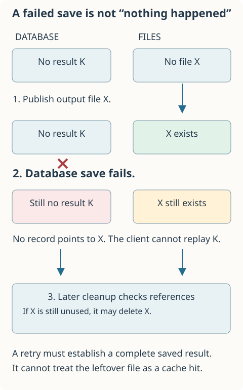
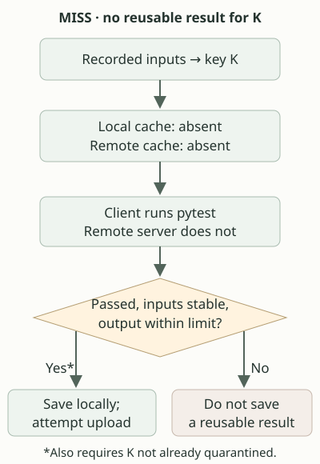
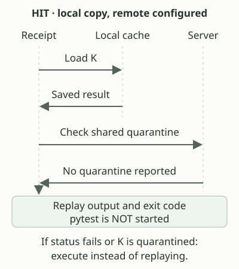
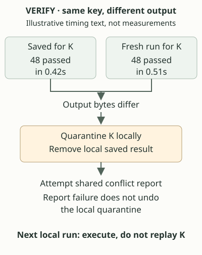
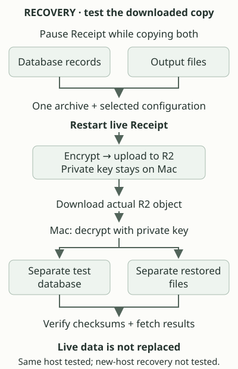

Updated 15 October 2026. This guide explains Phases 1–7 and the single-server HTTPS deployment. Git history records committed revisions. Chapter 9 follows the deployed connection and a one-off R2 recovery exercise. Chapter 11 introduces the design defense, which answers the questions an expert reviewer would ask. Monitoring remains deferred; no backup schedule is enabled.
01
Start here
You have a Python project and run its tests with uv run pytest. Pytest checks your code. Uv starts it in the project's Python environment. Receipt sits around that command: it can remember a successful run and show its saved output when the recorded inputs match next time.
We will follow that run through seven changes to Receipt: saving it locally, sharing it, cleaning up storage, checking incoming data, limiting what callers may do, measuring where time goes, and checking a Rust project's dependencies. The examples use Alice and a continuous integration worker, called CI. CI is a program that runs tests automatically.
You do not need to understand database locks or Go channels before starting. Each chapter introduces a problem before the code that solves it. Diagrams show sequences, not measured timings. Examples of output and filenames are illustrative.
The main distinction to keep in mind is that showing a saved result does not run the tests again. Receipt cannot recreate a report file or repeat a network request just by printing old output.
Choose a reading path
Read the chapters in order to understand the program. Each ends with a question you can answer before opening its explanation. To inspect setup commands, use the README. To examine the full nine-question phase reviews, test records, and dated decisions, use the review reference or its phone-readable version.
The reference preserves earlier claims and their amendments. This guide describes current behavior directly so you do not have to reconstruct it from history.
Alice runs her tests. They pass. Ten minutes later she runs the same command without changing her code. Could Receipt avoid doing the same work twice?
It first needs a description of the run. The command alone is not enough: pytest can behave differently after a source file, environment setting, or Python package changes.
Receipt records the command arguments, discovered files, environment-value hashes, and supported runtime information. It also records the working directory and platform. A hash is a short, fixed-length value calculated from some bytes. It helps compare content without keeping another full copy in the description. Hashing is not encryption.
Receipt calls the whole description a manifest. It calculates another hash from that manifest and uses it as the input key, the name under which it looks for a saved run.
Figure 1. A local run, in order
Describe the inputs
Receipt reads the files and settings it knows to record.
Calculate the key
Receipt gives this description a content-derived name.
Look for a saved result
If a usable result exists, Receipt prints it and does not start pytest.
Run pytest on a miss
If no usable result exists, Receipt starts the test command and shows its output.
Check the inputs again
Receipt saves a successful run only if its other storage conditions also hold.
Finding a usable saved result is a cache hit. Having to run the command is a cache miss. A cache is storage for work you hope to reuse.
type Manifest struct {
Version int `json:"version"`
Root string `json:"root"`
Directory string `json:"directory"`
Platform string `json:"platform"`
Command []string `json:"command"`
Inputs []Input `json:"inputs"`
}
In Go, struct groups named fields. string holds text and int holds a whole number. []string means a slice of strings, a sequence whose length can vary. Command needs a sequence because arguments have an order. Inputs needs one because projects contain different numbers of files and settings.
The text in backticks tells Go which field names to write in JSON. JSON is a text format that can represent objects, lists, strings, and numbers. Version lets Receipt distinguish this format from a later one.
A fixed-size array would require an input count in advance. A map, a lookup table, would make sense for finding one field by name, but these fields already have distinct names and types. Receipt does use a map during file discovery to avoid recording the same path twice.
What happens when pytest runs?
Receipt starts pytest as another process. A process is a running program with its own execution and memory. Receipt passes arguments directly rather than asking a shell to interpret a command string.
It shows output while capturing a copy. The capture has a size limit: a test can keep printing to the user, but an oversized capture will not be saved. Failed runs are not saved for replay either.
After execution, Receipt describes the inputs again. If that description changed, it does not publish the result. For example, uv might have installed packages during the run. The second scan helps notice that change.
Matching inputs do not prove matching behavior
Suppose a test asks a public website for today's price. The recorded source files can stay unchanged while the website's answer changes. Receipt does not automatically discover that dependency.
The same issue applies to time, randomness, and some files outside the discovered set. Declare extra files where appropriate, or bypass the cache for a command whose dependencies you cannot safely describe. The two scans also cannot detect a file that changes and changes back during the run.
With --verify, Receipt runs a saved command again and compares the exit code and both output streams byte for byte. A difference makes it stop trusting that key. Even timing text can cause a difference; a mismatch is not automatically a failed test.
Try explaining it
Why might editing an unrelated file cause a cache miss when you run just one test?
Answer: Receipt records the repository
Receipt currently includes the discovered repository files, not only the files that one test actually reads. The broader description can cause extra misses. Narrowing it would require a reliable way to discover that test's dependencies.
For the exact local storage rules and alternatives, see Phase 1's review.
Alice has saved a successful run. Now CI wants the same result. A file on Alice's laptop is not enough: the two clients need somewhere they can both ask.
Receipt can run a server. A client sends an HTTP request to it, a message that names an operation and may carry data. A lookup asks for a result; an upload supplies one. The server does not run pytest on the client's behalf. It stores and returns reported results.
Why keep descriptions and output separately?
The server needs to find a result by its input key and remember whether it is still trusted. PostgreSQL, a database that stores and queries records, handles that information. The potentially larger output is stored in files on the server.
Those output files are named by hashes of their content. Receipt calls them blobs. Here, blob means a stored sequence of bytes. Two results with identical output can refer to the same file instead of keeping two copies.
Figure 2. Where a shared result goes
Client
The client sends a successful result to the Receipt server.
Output files
The server writes complete output files, named by their content hashes.
Database record
The server saves the result description and references to those files.
Another client
The server loads the record, checks the output files, and returns the result.
The files come before the database record. Otherwise another client could find a record whose output has not been written yet. But the file write can succeed and the database save can fail. That leaves an unreferenced file, which later cleanup can remove. There is no single undo operation covering both storage systems.
A local copy still needs a shared trust check
When sharing is enabled, Receipt does not blindly replay its local copy. It asks the server whether the key has been marked untrustworthy. If that check is unavailable, it executes the command instead.
Here is the relevant condition in internal/app/run_session.go, inside runSession.lookup:
if s.remote.URL == "" {
return prior, true, nil
}
s contains the settings and resources for this invocation. prior is the saved local result. The empty URL means no shared server is configured, so the local result can be used. The three returned values are the result, whether it is a hit, and an error. Below these lines, the shared-server case checks the key's status before allowing replay.
What if the clients disagree?
Imagine Alice and CI report different output for the same key. Receipt must not quietly choose whichever answer arrived last. It marks that key as quarantined, meaning it must not be reused, and can retain information about the conflicting observations.
This is not proof that either caller is honest. A permitted caller can report false results. Nor does a hash prove the tests ran: it checks content identity, not execution history.
Sharing also has a practical limit today. Absolute checkout paths and environment settings are part of the key. Alice and CI do not automatically get matching keys merely because they checked out the same commit. Portable keys need further design.
Try explaining it
A client has a saved local result, but cannot contact its configured shared server. Why run pytest instead of printing the local result?
Answer: the local copy may be out of date about trust
The server might have learned about a conflicting observation since that copy was saved. Without the status check, the client cannot tell. Executing loses the reuse benefit but avoids treating an unchecked shared result as trusted.
For publication, conflict handling, and networking details, see Phase 2's review.
Eventually the server fills with old results. Removing old database records and removing unused output files are separate jobs. Deleting a record does not immediately mean every file it referred to is unused: another result might refer to the same file.
Receipt's collection command first works out which files surviving records still need. It keeps their hashes in a map. When inspecting a file, it can ask the map whether that hash is needed. Searching a list could also work, but would repeatedly scan that list for each file.
Why does the filesystem need a lock?
Consider a client reading a result. The server first finds its database record, then opens the output file. If cleanup deletes that file between those steps, the read fails.
A lock coordinates these operations. In Receipt's shared storage protocol, cleanup waits while a reader is using the protected storage. Multiple readers can overlap; cleanup and writes need exclusive access, which makes other participating operations wait.
Figure 3. Cleanup waits for a reader
Step 1
Reader
Reader finds the result record.
Cleanup
Cleanup asks for exclusive access and waits.
Step 2
Reader
Reader opens and checks the output file.
Cleanup
Cleanup still waits.
Step 3
Reader
Reader finishes and releases its shared lock.
Cleanup
Cleanup can now inspect and remove unused files.
The numbered rows show a possible execution, not elapsed time. The important relationship is that deletion starts after the protected read finishes.
The database lock coordinates participants using the same database. A filesystem lock also coordinates access to the output directory. Receipt binds that directory to its metadata store so a different store cannot treat another store's files as its own unused data.
These rules depend on every participant using the protocol. They do not defend against a hostile local program that ignores locks and changes files. They also do not establish that arbitrary network filesystems behave correctly.
The simple choice has a cost
Before saving new shared data, Receipt inspects existing storage to check the selected limits. A tiny upload can therefore do more work as the store grows. Collection also scans records and files, and it can make reads and writes wait while it runs.
We chose this understandable approach for a small store. Keeping continuously updated usage counts could reduce scans, but every interrupted or retried update would need to keep those counts correct. That is a possible later design, not a free optimization.
The limits do not cap every byte PostgreSQL or the operating system might use. Database overhead and temporary files need operational attention too. Maintenance defaults to a dry run so an operator can inspect planned changes before applying them.
Try explaining it
Why is locking each input key separately insufficient for all cleanup and storage-limit checks?
Answer: different keys can affect the same storage
Two keys can refer to one output file. Both can also consume the same remaining storage budget. A per-key lock alone does not coordinate those shared decisions.
For the exact limits and coordination rules, see Phase 3's review.
A client sends a result as JSON. What if it includes an unknown field, repeats a field, or claims that a failed run is reusable? Receipt needs to reject that data before treating it as a valid result.
There are two different questions. Does the document have the expected structure? And do its values make sense together?
For example, a result must name its key. That is a structural requirement. The key must also match its manifest, and reusable results must describe success. Those are rules about meaning.
Figure 4. From incoming bytes to a stored result
Bound the input
Receipt limits how much data it reads.
Check the JSON structure
It rejects unexpected, repeated, or missing required fields.
Check the values
It checks rules such as success and agreement between the key and manifest.
Accept the result
Only a valid result can proceed to storage. Stored envelopes also carry an integrity checksum.
Why check inside the type?
The same result type is read from HTTP requests and local files. Putting its decoding checks in UnmarshalJSON makes them run when Go's JSON decoder fills that type, rather than relying on each caller to remember them.
Earlier lines decode into a temporary value called next. Validate checks its meaning. If validation returns an error, the method returns without replacing the destination. *r refers to the result the caller asked the decoder to fill. Assignment happens only after the checks succeed. nil means there is no error.
Code that builds a result directly does not use JSON decoding, so storage methods also validate those values. A decoding hook is useful, but it is not permission checking and does not prove the sender ran the tests.
What does a checksum tell us?
A stored envelope includes a hash of its payload. Reading it checks whether the payload still matches that hash. This can expose damage or accidental changes. Someone able to replace both the payload and checksum can still construct a matching pair.
Try explaining it
If a JSON document has every required field, is that enough to accept it?
Answer: the values can still contradict the rules
A complete result can claim a nonzero exit code, contain an invalid hash, or carry a key that does not match its manifest. Checking the shape does not replace checking these values.
The exact fields, size limits, and compatibility rules belong in the JSON input contract. Interrupted-write evidence is in Phase 4's review.
Alice should be able to download results. CI should also be able to upload them. Giving both the same secret gives both the same broad access. Receipt's optional credential mode lets an operator issue separate secrets with explicit permissions and expiry times.
A credential is the secret a client presents. Anyone who obtains that secret can use it, so it must be protected. The operator can give a credential a label such as alice, but that label is not a verified human account.
Two questions before storage
Authentication asks whether the credential is valid. Authorization asks whether it allows the requested operation. A valid credential can still lack permission to upload.
Figure 5. Alice tries to upload with a read-only credential
Check the credential
Receipt checks whether the secret is valid, unexpired, and not revoked. Failure stops the request.
Check upload permission
Alice's credential allows reading, not publishing. Receipt refuses this upload here.
Storage stays untouched
The denied request does not proceed to decoding and storing a result. A permitted request would continue.
if known && !principal.Allows(scope) {
a.metrics.forbidden.Add(1)
http.Error(w, "forbidden", http.StatusForbidden)
return
}
principal holds the checked credential's public details and permissions. scope is the permission this operation requires. Allows checks for that permission. When the check fails, Receipt counts the refusal, sends an HTTP response, and returns before the storage handler runs. known means the operation has a permission mapping; other code rejects unmapped operations.
Why does Receipt ask the database each time?
Suppose Alice's secret is stolen. The operator revokes it, meaning later credential checks should refuse it. Receipt consults the current database record for each request instead of trusting a permission copy remembered earlier.
The database stores a hash of the token, not the usable secret. The token is generated from randomness intended for security, not chosen as a human password. Exact byte counts and comparison mechanics are implementation details in the review reference.
Checking each request costs a database query. A remembered copy could reduce queries, but might keep accepting a revoked credential until it refreshes. We currently favor the direct check. This is a choice about revocation behavior, not a claim about production throughput.
Revocation does not rewind a request
If an upload passes its credential check and then pauses, revoking the credential does not cancel that upload. It may still finish. A later request is checked again and will be refused once it sees the committed revocation.
When the database cannot perform a check, the server refuses access rather than substituting the old shared secret. The client may then run tests directly; server permissions do not control what the user's local programs can execute.
What this phase does not provide
Callers still share one store. Read permission does not mean access to only Alice's results. Browser login, private organizations, and a durable record of who uploaded each result are not implemented.
Remote credentials need encrypted transport, normally HTTPS, so someone observing the connection cannot read the secret in transit. Receipt itself does not terminate TLS. The deployment in chapter 9 puts Caddy in front of it for that job. The secret is also currently passed to the child test process through the environment. Run trusted code, and do not automatically exclude that setting from input recording if it can affect behavior.
Try explaining it
Alice can download a result but cannot upload one. Did authentication fail?
Answer: her permission check failed
Her credential is valid. It does not allow this operation. An invalid credential receives HTTP 401; a valid credential without the needed permission receives HTTP 403. HTTP is the request-and-response protocol, and these numbers identify response categories.
The chapters explain behavior. To follow a change in the source, start with the part responsible for it. A Go package groups related source files. These packages run in one client or server process; a package is not a separate service.
The main responsibilities
internal/app reads the command and combines lookup, execution, verification, and publication. Start at run.
internal/fingerprint describes inputs and calculates their key. Start at Build and Manifest.Key.
internal/runner starts the command and captures output. Start at Run.
internal/cache stores results. Start at the Store interface; its other files implement HTTP, shared storage, and maintenance.
internal/strictjson checks the declared JSON structure in Object. Each decoded type owns its value rules.
internal/auth defines service credentials and permissions in Principal. Its PostgreSQL implementation, starting at Postgres.Issue, manages their lifetime.
These boundaries keep responsibilities identifiable. They do not make future work automatic. A cloud output store must still solve publication, deletion, and failure handling. Another project may need different permissions and account rules. Receipt's current internal packages are not a ready-made shared identity platform.
Frequently performed work versus occasional work
People call frequently performed work the hot path. In Receipt, input scanning and result lookup happen on normal commands. In credential mode, each server request also checks its credential. A cache hit avoids pytest, not all computation or disk access.
Occasional work is called the cold path. Issuing credentials and collecting unused files fit here. Occasional does not mean cheap: cleanup can inspect the whole store and make other operations wait.
We have tested selected behaviors and failures, but have not established production latency or capacity. The verification records and each phase's evidence section say what actually ran. Their test names and execution counts are available for inspection rather than part of the introductory lesson.
How to explain a choice to someone else
Start with the problem. Then describe the chosen behavior and one reasonable alternative. Finish with its cost, what we checked, and what would make us change our mind.
For cleanup, that becomes: a reader needs its output file to remain available; locks make cleanup wait; delaying deletion alone cannot establish that a paused reader has finished; the chosen lock can make other work wait; selected concurrency tests check this sequence. If measured waiting becomes unacceptable, we need a different protocol, not just a smaller timeout.
For permissions, it becomes: a stolen secret must stop working on later checks; fresh database lookups support that behavior; cached permissions can remain stale; queries cost work and depend on the database; selected tests cover denial and revocation. If queries become a measured bottleneck, any cache must state how long revoked access can remain accepted.
The full nine-question reviews cover structures, architecture, coordination, pitfalls, costs, guarantees, alternatives, evidence, and reasons to revisit choices. Read them when you want to inspect a particular decision in depth.
Alice uploads a small test result. It takes longer than she expects. Reading a small file should be quick, but perhaps the request has not reached the file yet: another writer or cleanup may hold the lock it needs.
Run the server with --request-log to give each request a server-generated ID and one timing summary. The ID appears in its response header too, so Alice can find the matching summary without printing her token or test output into the log.
Figure 6. Reading the request in parts, not guessing from its payload
Credential check
Receipt checks whether this request may proceed.
Connection and locks
The request can wait here before opening any output file.
Metadata and files
Receipt reads and checks the stored result.
Response, then summary
The response reports its request ID; the handler's summary records measured stages.
Read one measurement carefully
In our local experiment, four clients repeatedly uploaded already-stored results into a store with 128 descriptions. The mean database-lock call took about 55 milliseconds. That call includes a database round trip and time waiting for other work to release the lock. It is inside the full request duration, not extra time to add on top. The measured bars show both on the same scale.
Some timers contain others: counting storage includes file enumeration, for example. Adding every number would count some work twice. These summaries are clues about where to investigate, not a complete accounting of every instruction.
Does Receipt help the real test command?
We ran a CodeCraft selection with 15 passing tests. Five direct runs had a median of 253 milliseconds. The first Receipt run took 592 milliseconds; it ran the tests and scanned inputs before and afterward. Five saved-result hits had a median of 127 milliseconds. They skipped pytest but still inspected inputs.
The median is the middle duration after sorting the samples. These few ordered samples, on one machine with warm filesystem caches, are not a promise for every project. The comparison and repeatable commands let you inspect what was measured.
What do diagnostics cost?
Each enabled timer reads the clock and updates a small record. The server writes one summary after the request handler releases its storage locks. We deliberately did not add a background queue: a slow destination can therefore delay handler completion. The measured handler duration excludes the final log write.
These new summaries omit secrets and captured output. That does not make all stderr safe to publish: the test process can still print whatever it normally prints. Diagnostics are also not a durable history of who submitted each result.
Try explaining it
If four simultaneous writes spend much of their time waiting for a lock, why would adding more writer goroutines not necessarily make them finish faster?
Answer: They still need the same exclusive access
More goroutines can wait together, but only one can hold this exclusive lock. First measure what happens while it is held. A different locking design would still need to protect files from cleanup and enforce the shared storage budget.
Alice runs a Rust library's tests with Cargo, Rust's build and package tool. She has not changed her test file. But the test calls a helper library, and that library has changed. Replaying the old success would hide the change. Recording only the test command or compiler version is not enough.
Receipt now asks Cargo which packages the selected test needs. This relationship is called a dependency graph: an arrow from A to B means A needs B. A helper may itself need another helper. Receipt follows these arrows before looking for a saved result. The dependency illustration shows why the same helper can be reached more than once.
id identifies the package being visited. seen remembers packages already checked. When two arrows lead to the same helper, Receipt checks it once rather than repeating its work. Other maps let Receipt find a package's description and outgoing arrows from its ID.
Before Receipt reuses a Cargo result
Select one package
Read frozen metadata using the chosen manifest and feature options.
Check its dependencies
Refuse build scripts, procedural macros and unsupported configuration before lookup.
Record the inputs
Read the lockfile, tools and supported package sources as well as repository files.
Look up the result
Replay only an eligible saved success; otherwise execute the original command.
Some packages contain a build script: a program Cargo runs while compiling. That program could read an undeclared file or invoke another tool. Receipt does not yet track those actions. It therefore runs such a command normally without using its cache. Procedural macros, which also execute during compilation, get the same treatment. The refusal illustration shows that this decision happens before reading a saved result.
In the real regex repository, the regex-syntax library's 147 tests can be saved and replayed under the supported command. The main regex package still runs uncached because its dependency graph contains build scripts. This is useful partial support, not support for every Rust project.
The checks also cost time. In a follow-up with five direct runs and five hits, the middle (median) regex-syntax run took 139 milliseconds directly and 434 milliseconds through a Receipt hit. But unicode-width's longer-running suite took about 3.05 seconds directly and 0.39 seconds on a hit. The side-by-side measurements show why a hit is not automatically a speedup: the checks must cost less than the execution they avoid. These were local, warm-build observations, not a remote-cache benchmark.
What if a downloaded library changes?
Cargo.lock records which dependency versions were selected. It does not change just because someone edits a downloaded source file. Receipt therefore also reads the selected dependency files. Our isolated test edits a copied library to introduce a compiler error: the old saved success must not hide that error. The three-state illustration shows the edit and restoration.
There are two caches in this example. Receipt remembers test results; Cargo remembers compiled code. To demonstrate the error, the test clears only its temporary compiled dependency files before execution. Receipt deciding to run Cargo is not a promise that Cargo recompiles every file. No user dependency cache is edited or cleared by this test.
Check your understanding
Alice's selected crate has no build script, but one of its helper libraries does. Should Receipt replay a previous success?
Answer: follow the whole selected dependency graph
No. The helper's build script is also part of compiling this test. The current adapter refuses reuse and lets Cargo execute. Ordinary tests can still read external files or services, so passing this check is not proof that all inputs have been captured. See the command contract and full Phase 7 review.
Suppose GitHub starts a fresh computer to run Receipt's tests. That computer has no local saved result. Instead of asking you to open an SSH tunnel, it can now contact https://receipt.sidsharma.dev directly. Follow the arrows: finding the address and fetching the result are different conversations.

DNS finds the droplet; HTTPS carries the request to Caddy.
The worker first asks DNS for the address of receipt.sidsharma.dev. DNS maps names to addresses. Cloudflare answers with our droplet's IP. In our DNS-only setup, Cloudflare does not carry the subsequent cache request.
Next the worker opens an HTTPS connection to Caddy on the droplet. HTTPS encrypts the public connection and checks a certificate for the hostname. Caddy passes the request to Receipt inside the same machine. This forwarding role is called a reverse proxy. It lets Receipt concentrate on cache behavior while Caddy handles certificates and their renewal.
The hostname identifies the public site. 127.0.0.1:7777 identifies Receipt on this same machine; 7777 is its port, the number used to select the service. Only Caddy's web ports are public alongside SSH. Receipt's own port and PostgreSQL stay private. Local HTTP avoids another certificate between processes on the same host; it also means Caddy and the administrator can see requests.
Encryption is not permission
Anyone can know the hostname and make an HTTPS connection. Receipt still asks for a token and checks whether it permits the requested operation. A token is a secret the client presents, not something supplied by DNS or by the site's certificate. A rejected token means the connection may be working but access was refused. We must not disable HTTPS checks to fix that kind of error.
We chose HTTPS after proving the earlier private tunnel. CI now needs only the Receipt token, not an additional SSH key. That simplifies each job, but exposes the API to internet traffic. It does not make the server resistant to every kind of overload. Monitoring is still a next step.
Watch the test, not the old PASS message

A second empty local cache can reuse the first client's saved result.
First the client misses, runs its tests and uploads success. A second invocation starts with another empty local cache, fetches that success and prints the saved output. Both display PASS. To tell whether the test actually ran, our small fixture appended to a separate execution marker. The marker stayed at one after replay. Changing the source made the test execute again and fail.
Receipt's own CI also keeps a separate job that always executes its tests with a disposable PostgreSQL database and race detection. A cached answer from the program under test must not be the only evidence that the program works. If the HTTPS readiness check fails, the cached job chooses local execution; it does not declare the tests passed just because the cache is unavailable.
One server is simple, but can still fail halfway
One droplet keeps the proxy, application, database and files close together. We can learn to operate that arrangement before adding communication between several storage machines. It also means a droplet failure affects all four.

A failed database save does not undo a file already written.
Suppose output file X was saved, then its database record failed. X remains, but there is no usable result pointing to it. Cleanup may later remove it if still unreferenced. A database rollback cannot undo a filesystem write. HTTPS protects the connection; it does not make these two saves one operation.
This is also why recovery must include database records and output files. We tested an encrypted backup by uploading it to R2, downloading that actual object, and restoring it into a separate test database and directory. R2 holds the backup, not Receipt's live output files.
Imagine the droplet disappears. A backup kept only on that droplet disappears with it. The R2 copy gives us the data elsewhere; the private recovery key on the Mac lets us decrypt it. Losing that key would make the copy unusable.
Droplet: pause → copy database + files → restart → encrypt → R2
│
Mac: private key + downloaded copy ←────┘
│ decrypt
Test on droplet: separate database + copied files → fetch saved results
Live Receipt: original database + original files stay in place
The pause kept the database and files from changing while we copied them. The measured stop/start interval was 1.306 seconds, not a promise about future backups. Uploading happened after restart. All ten saved results could be read from the restored server. We then removed the temporary restored data.
This exercise reused the existing machine and its PostgreSQL setup. It did not test rebuilding a new machine. For this small learning deployment, we chose one recovery exercise rather than a nightly schedule. Monitoring is also deferred. See the recovery record for the archive location, recovery steps and remaining limits.
Check your understanding
The HTTPS connection succeeds, but Receipt rejects an expired CI token. Should we replace the certificate or open PostgreSQL's port to the internet?
Answer: fix the credential, not the network boundary
Neither. The request reached Receipt; it needs a valid credential with the right permissions. Keep the database private and certificate verification on. The current CI token expires on 12 November 2026 at 03:28 UTC (11 November, 7:28 p.m. Pacific), and renewal is not automated. The renewal steps also explain why renewing briefly pauses cache reads and writes. The full deployment review answers all nine questions, including alternatives, evidence and revisit conditions.
10. Final walkthrough: miss, hit, conflict and recovery
Follow one command through four situations:
receipt run -- uv run pytest
Assume the Python environment already works and Receipt is configured to use your remote cache. The question is: do we have a saved successful result for these recorded inputs, and are we still allowed to reuse it?
A miss: run the tests
You run the command for the first time. Receipt builds a manifest: a description of the inputs it knows about. This includes project files, command arguments, environment-value hashes and Python environment information. It hashes that description into a cache key, which is the name used to look up the result. Call our example key K.
Watch where pytest runs in the diagram: on the client, not the cache server.

A miss runs pytest on the client, then checks whether its result can be saved.
Text equivalent: recorded inputs produce K. Neither the local nor remote cache has a reusable result, so the client runs pytest. A successful run with stable recorded inputs, bounded output and no local quarantine can be saved locally and uploaded. Otherwise Receipt does not save a reusable result. Storage or network failures can still prevent a save.
after, e := fingerprint.Build(ctx, dir, command, cfg.ExtraInputs, cfg.IgnoreEnvironment, o.generic)
stable := e == nil && after.Key() == key
key describes the inputs before execution; after.Key() describes them afterwards. If you edit a source file while tests run, Receipt should not save the result under the old description. Two matching scans cannot detect a file changed and changed back between scans, or discover every external dependency.
The saved result contains the command description, stdout, stderr and exit code. Stdout is normal command output; stderr is its separate diagnostic output. An exit code of zero means the command reported success. Editing a tracked test file before the next invocation normally produces a different key, rather than reusing K.
A hit: replay without execution
Run the same command with unchanged recorded inputs. Receipt calculates K again and finds the local result. When a remote cache is configured, it also checks the server's quarantine status before trusting that local copy.

A local hit checks the remote quarantine status before replaying saved output.
Text equivalent: Receipt loads K locally, asks the server about quarantine, and replays the output and exit code if the check allows it. Pytest does not start. If status is unavailable or the key is quarantined, Receipt executes instead. With no local copy, a remote hit can supply the saved result.
prior is the saved result. Unless verification was requested, this returns before reaching the code that starts the tests. The replay function writes the saved bytes to the terminal. Actual excerpt from runSession.replay in run_session.go:
if _, e := out.Write(prior.Stdout); e != nil {
return 0, e
}
if _, e := errOut.Write(prior.Stderr); e != nil {
return 0, e
}
Why contact the server for a local hit? Another client may have discovered a conflict. An old local copy should not bypass that warning. This adds a network check, and server trouble can force execution even with a local copy available.
A hit reproduces output, not execution. It does not recreate files the tests would write, repeat their network requests or preserve the original mixing of stdout and stderr. In our experiments, a separate execution marker established whether tests really ran; seeing PASS twice would not establish that by itself.
A conflict: the same key, different observations
Suppose a test prints elapsed time. These outputs are illustrative, not measured:
Saved run: 48 passed in 0.42s
Fresh run: 48 passed in 0.51s
Both runs passed, but their output bytes differ. An ordinary hit cannot discover this because it does not execute the tests. Ask Receipt to run a hit again:
receipt run --verify -- uv run pytest

Different observed output quarantines K locally; reporting to the server is attempted separately.
Text equivalent: verification compares a fresh execution with the saved exit code, stdout and stderr. For this mismatch, Receipt marks K quarantined locally, removes the local saved result and attempts a shared conflict report. Future local runs execute instead of replaying K. A failed report does not undo the local marker, but it can leave other clients unaware of the conflict.
Quarantine means do not reuse this key. It does not mean Receipt has determined which run was correct. Actual marker creation from quarantine in app.go:
func quarantine(dir, key string) error {
return atomically(filepath.Join(dir, "quarantine", key), []byte("conflicting observation; do not reuse\n"))
}
The marker is a file, so it remains after this command ends. A verification mismatch returns a nonzero exit code even when the fresh tests passed. If recorded inputs change during verification, Receipt instead reports that the comparison is inconclusive. Exceeding the output capture limit also prevents successful byte-for-byte verification.
Why not replace the old answer? That would hide disagreement. Timing text may be harmless, but differing output may also expose randomness, an undeclared input or an unreliable test. Two clients publishing different observations under the same key are another way the shared store can detect a conflict. There is no automatic rule that makes a quarantined key trusted again.
Recovery: restore stored state, not trust
Now suppose stored server data is lost. This is not conflict resolution: restoring a backup recovers earlier state, not proof that a result is correct.
A shared result spans database records and output files. Copying only the database can leave records pointing at missing files. Our backup includes both, plus the binary and selected configuration. Follow the copy out to R2 and back:

The downloaded R2 archive is decrypted and restored separately; live data stays in place.
Text equivalent: pause Receipt, copy database and files, restart, encrypt and upload. Download the R2 object and decrypt it on the Mac with the private recovery key. Verify checksums, restore a separate database and files, then fetch results from a test server. The live data is never replaced during this drill.
The finally block attempts restart even if copying raises an error. It cannot run after power loss or a forced kill. Restart happened before encryption and upload, so the pause did not include waiting for R2.
In the completed drill, the downloaded encrypted bytes matched the uploaded bytes. All four restored database tables matched the live contents checked at the time, and all ten saved results were readable. A previously checked result also matched its expected checksum. Temporary restored data was removed after the test; the encrypted backup remains in R2 and on the Mac.
This proves that particular backup worked on the existing machine. It does not prove new-host recovery or recovery without the private key. Changes after the backup are absent: a credential revoked later could appear unrevoked after restoring the old state. The recovery record preserves exact evidence and limitations. No nightly schedule is enabled.
Check your understanding
Does an unchanged key prove the tests would produce the same output today? Would restoring a backup settle a disagreement between two observations?
Answer: neither is proof of correctness
The key describes recorded inputs, not every possible influence on a test. Recovery restores earlier state, including its limitations; it does not decide which conflicting observation was right. Receipt's checks, verification mode and quarantine expose some problems rather than eliminating every uncertainty.
The chapters so far follow one test run and explain what happens. A reviewer asks a different kind of question: why this choice, what else could work, what it costs, and what breaks when it fails. Suppose someone asks why Receipt uses flock and not fcntl locks, or what happens if the machine loses power between saving output file X and saving the database record that points to it. The answer needs the operating-system and database rules underneath the code.
The design defense is organised as those questions, in the order a reviewer would ask them. It starts from first principles: content hashing, file locks, fsync and hard links, PostgreSQL transactions and advisory locks, and bearer tokens. Then it walks each decision: the cache key, local publication, the shared store's locks, the cost of an upload, credentials, the threat model and the deployment. Each section names the alternatives, the cost with measured numbers where they exist, the failure behaviour and links to the exact lines of code.
It also lists the known gaps honestly. For example, the credential-issuance lock reuses the storage lock's key, so issuing a credential briefly pauses every cache read and upload. And the CI token's hash is part of every CI cache key, so renewing the token makes every earlier CI result unreachable.
Check your understanding
A reviewer asks: "Two uploads for different keys arrive together. Why does the second one wait?" Which shared resource do they both need?
Answer: the storage budget and the shared output files
Both uploads may add files to one shared blob directory, and both draw on the same storage budget. The quota check must see a total that no other upload is changing, and cleanup must not delete a file that an upload is about to reference. Receipt meets both needs with one exclusive lock. The design defense explains what that lock costs as the store grows and which designs could avoid the wait.
15 October 2026: design defense and corrected claims
Added chapter 11 and the design defense. Code references in this guide now link to exact lines on GitHub, and a documentation test checks that each linked line range still contains the named symbol. Corrected claims elsewhere: credential issuance shares the storage lock key rather than using its own, commands read standard input from /dev/null rather than a closed descriptor, and the CI token expires on 12 November 2026 at 03:28 UTC. The review reference records these corrections with dates. No program behaviour changed.
13 October 2026: final four-case walkthrough
Chapter 10 follows a miss, hit, verification conflict and backup recovery with four offline diagrams, text equivalents and attributed code excerpts. This is a teaching update; the recovery evidence comes from the completed drill, not a new server operation. Earlier phase reviews remain historical records.
13 October 2026: deployment teaching review
Chapter 9 now follows a request through DNS, HTTPS, access checks and storage. Three diagrams show the public/private boundary, actual execution versus replay, and a save that fails between two stores. The dated nine-question review preserves the evidence and limits. This update changes documentation, not the server or CI. Monitoring and automated backups are next.
9 October 2026: harden Cargo before remote deployment
The Phase 7 review now has a dated hardening amendment. It covers changed registry bytes with an unchanged lockfile, refusal after a saved success, more actionable diagnostics, and separate timings for tool checks, dependency queries and extra source reads. Three additional Rust repositories were cloned for the lab. Supported commands remain deliberately narrow; no build-script support was added. The next proposed milestone is a single-server remote deployment, then object storage—not another language adapter. Provisioning still requires provider, account and budget decisions.
9 October 2026: Phase 7 bounded Cargo support
Cargo reuse now checks installed tools, the selected dependency graph, a frozen lockfile and registry source bytes. Build scripts and other unsupported cases run uncached. The nine-question review records source/dependency/feature changes, refusal checks and the small real regex experiment. The adapter does not normalize test output or change storage formats. Existing Go and Python probes remain separate.
9 October 2026: Phase 6 diagnostics and local measurements
Implemented opt-in CLI timings and redacted request summaries, a fixed-size per-operation recorder, and repeatable local/shared experiments. See the nine-question Phase 6 review and raw samples. Runner adapters, durable caller history and production deployment remain separate future work.
9 October 2026: separate teaching from the review record
This revamp introduces a current-behavior reading path, five sequence figures, explained source excerpts, and questions with optional answers in the HTML reader. The existing phase reviews and evidence were moved to the linked reference without changing their recorded conclusions. No Go implementation changed for this revamp.
The writing approach follows Receipt's prose guide, the technical-writing guide, and unslop. Netscope's local field notes provided the chapter-and-example model. These sources guide presentation, not claims about Receipt's implementation.
9 October 2026: illustrations in the phase reviews
The phase-review reference now includes ten illustrations: manifest fields, changed input keys, shared storage, an interrupted save, reader and cleanup coordination, upload validation, permission checks, and revocation, upload inspection costs, and the collector's map of referenced files. Each appears beside the explanation it supports and includes a text version in the Markdown reference. The numbered events show possible execution orders rather than measured timings.
9 October 2026: rebuild the review illustrations
All five reviews now have purpose-drawn illustrations: twelve in total, including the local hit/miss branch and request-admission slots. Four offer manual step-through controls for interrupted publication, reader/cleanup coordination, validation, and revocation. Connected arrows show shared file references; aligned lanes distinguish waiting from work. The Markdown reference includes the same SVG pictures and text explanations. These are examples of program behavior, not timing measurements.
The SVG images were rendered and inspected. Documentation checks passed; the local HTML reader still needs browser interaction and phone-layout verification because of the previously recorded local-file browser restriction. No Go code changed for this illustration update.
9 October 2026: show what remains after failure
The review adds five illustrations beside previously unpictured examples: temporary changes missed by two input scans, committing a conflict warning, files left after a failed save, partial cleanup and retry, and failure to print an already-created credential. Phase 4's guarantees section now shows the filesystem and database outcomes explicitly and explains why a well-formed result is not proof that tests ran. The review has seventeen figures; this count is not a claim that every explanation needs or now has an illustration.
9 October 2026: try real upstream test suites
The real-repository lab records initial tests in pytest, Hugo, regex, Ghostty and Vue core. Each selected baseline passes. Only the Python experiment currently demonstrates Receipt reuse: Go's probe includes a changing temporary path, and the other three runners execute uncached. A deliberately failing Python test also shows why a changed file must trigger execution instead of replaying an earlier success. This is experimental evidence and a list of next fixes, not a completed new runner-support phase.
9 October 2026: correct Go's changing temporary-path input
Hugo's selected tests can now be saved and replayed. Go invents a new temporary directory for each probe; Receipt used to mistake that generated name for a meaningful change. The correction replaces only the random suffix in the known compiler mapping, keeping real compiler settings in the key. A deliberately failing source change forced execution; restoring the source restored the hit. The dated correction review explains the comparison, alternatives, evidence and remaining limits. This is a small maintenance fix, not completed Cargo/Vitest/Zig support.
9 October 2026: prepare a first Fly deployment
The deployment proposal adds templates for one Receipt server and a separate, private PostgreSQL server, each with its own disk. Its picture follows a result from the laptop to both stores. Existing Fly apps are not part of this proposal and have not been changed.
The proposed planning budget is $20/month, pending San Jose pricing and account allowance checks. Local configuration checks and Linux cross-compilation do not establish a working cloud deployment. Container startup, Fly validation, live reuse and backup recovery remain to be checked. This is preparation, not a completed remote-deployment phase.
12 October 2026: initial private DigitalOcean setup
The single Ubuntu Droplet now has a separate administrator account, an SSH-only firewall, and a localhost-only Receipt service backed by local PostgreSQL. Without a domain, the first client connection will use an encrypted SSH tunnel. The setup record explains the connection and checks. This is not a completed deployment phase: real workload reuse, backup recovery, public HTTPS and CI validation remain outstanding.
12 October 2026: remote-cache experiment passed
A small Go test ran on the Mac and saved its result on the Droplet. A second invocation with an empty local cache fetched that result without running the test again. Changing the function from 42 to 43 forced a new execution and returned the expected failure instead of yesterday's success. An external execution counter distinguished replay from actual execution.
The experiment record contains the three outcomes and limits. The short-lived credential was revoked and the SSH tunnel closed. This validates one controlled laptop workflow, not cross-job CI reuse or production readiness.
12 October 2026: update, reboot and recovery drill
The Droplet's pending Ubuntu updates were installed and it rebooted into the new kernel. Receipt and PostgreSQL started automatically, and the saved result remained readable. Before updating, we paused writes and copied both stores into an encrypted backup on the Mac. Decrypting that actual copy and restoring into a separate database/file view returned exactly the same saved-result bytes.
The recovery record explains what was backed up, the isolated test, and the remaining limits. This was one manual backup and a same-host isolated restore, not a scheduled backup system or a full rebuild on a new machine. The recovery key still needs separate secure custody. Public HTTPS and CI validation remain outstanding.
12 October 2026: two CI runners share a cached result
The first GitHub Actions job ran a small Go test and saved its result through an SSH tunnel. The second job used a fresh runner and an empty local cache: it fetched the saved result, and the test's execution marker stayed absent. Changing the function from 42 to 43 made the test run and fail. Restoring 42 and closing the tunnel made it run locally and pass.
Follow the CI experiment for the sequence, evidence and access restrictions. CI uses its own restricted SSH account, not the owner's administrator key. This is a controlled Linux fixture with matching paths, toolchains and environment—not automatic reuse across arbitrary CI projects. No public Receipt port or new VM was added. Both CI runs passed. Afterwards the experiment credential was revoked, its SSH key disabled and the GitHub secrets removed. The workflow remains as a tested example; another run requires fresh access rather than the administrator key.
12 October 2026: Receipt's own CI suite
Receipt now has a workflow for its actual Go tests, alongside an independent uncached job. The cached job skips the opt-in database tests; the independent job runs against disposable PostgreSQL and enables Go's race detector. A saved success therefore cannot be the only evidence that Receipt itself still works.
The Receipt CI guide explains the two paths and the 30-day credentials. Pull requests receive no private-cache credentials. The initial live run passed both jobs. A same-commit rerun fetched the result on another runner, while the independent PostgreSQL/race suite passed again. CodeCraft has not been configured yet.
13 October 2026: HTTPS without an SSH tunnel
A client can now use https://receipt.sidsharma.dev. Its encrypted connection ends at Caddy on the droplet; Caddy forwards the request to Receipt inside that same machine. Receipt still checks the caller's credential before allowing protected operations. PostgreSQL and Receipt's internal port remain private.
An authenticated request from the Mac fetched the saved result unchanged. Missing, invalid and revoked credentials were rejected. The certificate and normal DNS lookup passed verification. This checks reading and authentication, not a fresh upload/replay sequence or performance under internet traffic. At this initial HTTPS check, CI still used its SSH tunnel. The follow-up below records its migration.
See the HTTPS deployment record for the connection diagram, configuration, checks, rollback and remaining work.
13 October 2026: CI connects directly over HTTPS
A fresh Go fixture uploaded a result and replayed it from a second empty local cache. Its execution marker stayed at one; changing the source made it execute again and fail. The temporary credential was revoked afterwards.
PR #2 moved Receipt's CI to HTTPS and was merged after fresh runners demonstrated a miss followed by a remote hit. The independent PostgreSQL/race job passed both attempts and again on main. The old CI tunnel key was disabled and its two GitHub secrets removed; the application token and its November expiry remain unchanged.
Your administrator SSH access is unaffected. These CI changes were made in /tmp/receipt-https-ci-20261013, preserving this checkout's uncommitted work. See the deployment record for the fixture evidence and the linked PR for the current CI guide.
13 October 2026: CI connects over HTTPS
Receipt's CI now connects to https://receipt.sidsharma.dev instead of creating an SSH tunnel. Caddy accepts the encrypted connection and forwards the request to Receipt on the same droplet. Receipt still checks the caller's token and permissions; its internal port and PostgreSQL remain private.
A fresh local test uploaded a result, then replayed it from an empty local cache. An execution marker stayed at one, showing that the second invocation did not run the test. Changing the source made it run again and fail. Next, fresh GitHub runners demonstrated a miss followed by a same-commit remote hit over HTTPS. The independent PostgreSQL/race suite passed on both attempts.
The CI guide records the checks and limitations. This changes the connection, not the rules for deciding whether a saved result can be reused. The existing token retains its November expiry, and unavailable caching still falls back to local execution.
13 October 2026: one-off R2 recovery exercise
One encrypted backup was uploaded to the private receipt-backups bucket, downloaded, decrypted on the Mac, and restored into isolated storage on the droplet. The live database was not replaced. The temporary restored database and decrypted files were removed afterwards. The encrypted archive remains in R2 and on the Mac; the private recovery key stayed on the Mac throughout.
The dated deployment review amendment records the nine review questions. No nightly schedule or monitoring workflow was enabled. This supersedes the earlier plan to do automated backups next.
Maintaining these documents
Edit this Markdown source and regenerate the offline HTML with python3 docs/render_working_doc.py. Check for stale output with python3 docs/render_working_doc.py --check. Update the relevant teaching chapter when behavior changes, then append the dated nine-question review and evidence to both review-reference formats. Preserve historical amendments.
The HTML is a generated view of this source, not another prose copy to maintain. It works without a network connection. If your phone's file viewer shows literal HTML, use this Markdown version; it contains the same explanations and figure sequences.